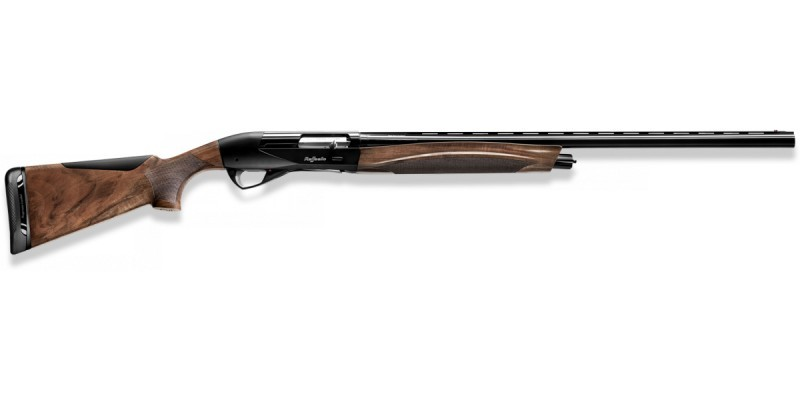
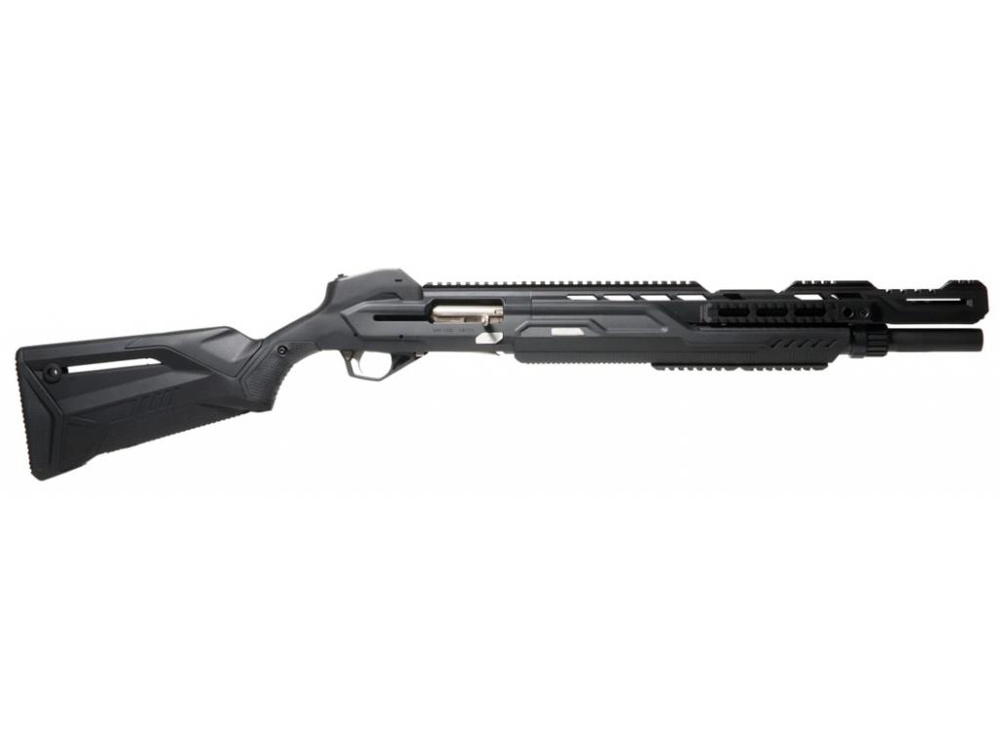
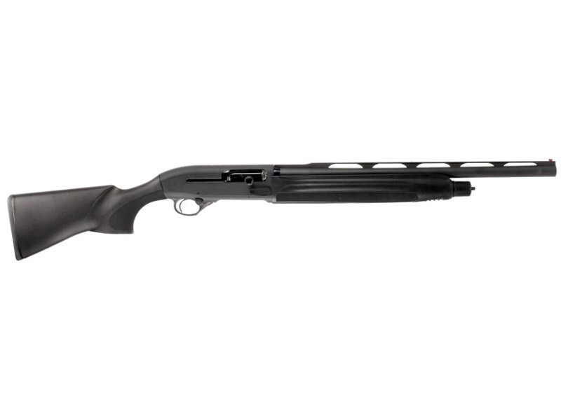
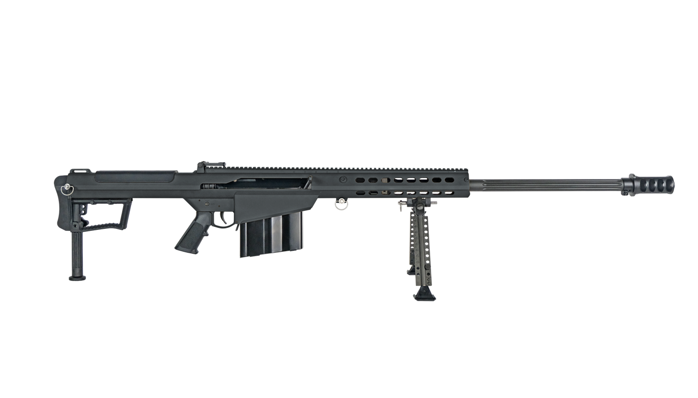
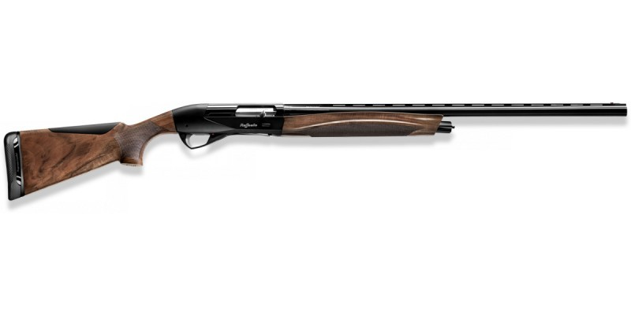
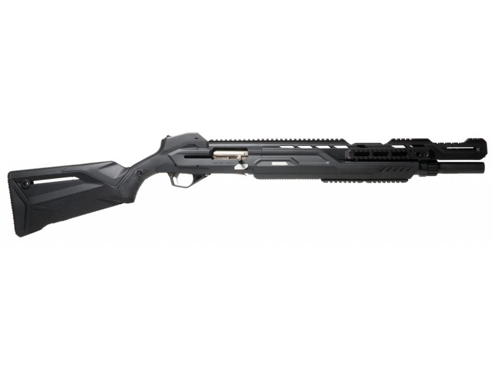
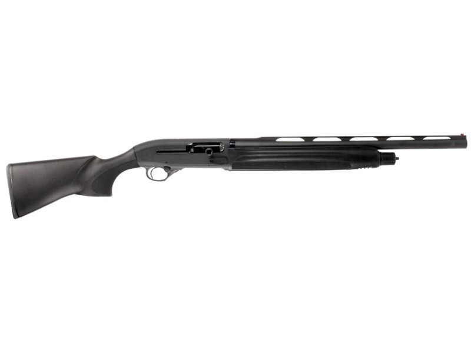
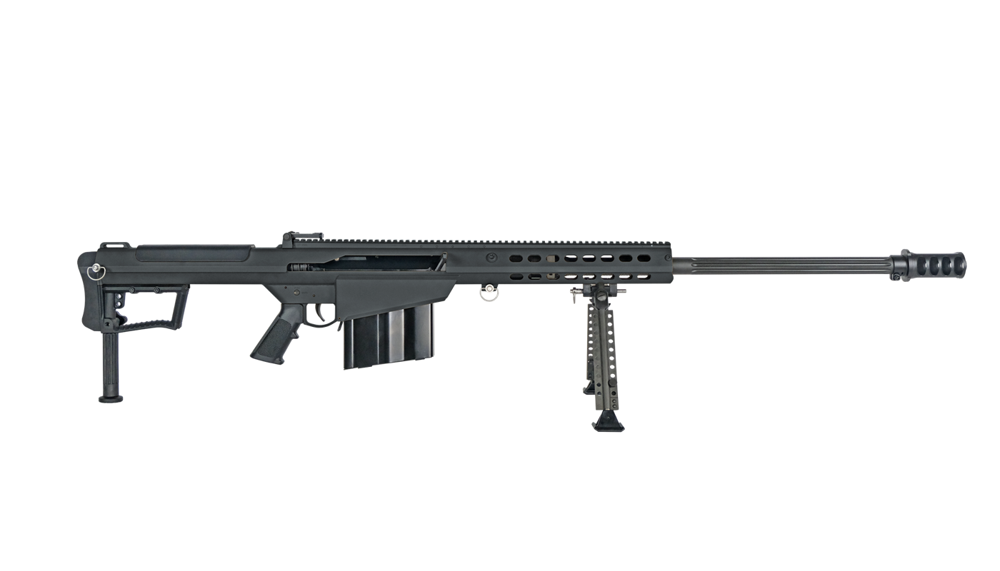

ATA ARMS Turqua Synthetic Black (ложа черный пластик), 308Win
Калибр, мм:
308 Win
Артикул производителя:
ATA.T.06
Страна происхождения:
ТУРЦИЯ:
Принцип действия:
Продольно-скользящий (болтовой) затвор
Тип магазина:
Отъемный
Длина ствола:
560 мм
Тип ствола:
Нарезной
Тип взвода:
Болтовой
Производитель:
ATA Arms
Материал приклада:
Пластик
Емкость магазина:
3+5
Тип заряда:
Патрон
Ружье полуавтоматическое Benelli Colombo 12/76, 71
Бренд:
Benelli
Калибр:
12/76
Страна:
Италия
Требуется лицензия:
Только с лицензией
Тип оружия (принцип действия):
Инерционное
Расположение стволов (гладкоствольное):
Одноствольное
Длина ствола:
710 мм
Количество стволов:
1 ст.
Код товара:
29057535
Тип магазина:
Трубчатый
Модель:
Colombo
Емкость магазина:
4+1
Материал ложа:
Дерево
Гарантия:
12 месяцев
Под левую руку/под правую руку:
Под правую руку
Открытые прицельные приспособление:
Да/WS
МР-155 Ultima 12/70 510 мм Алюминий/пластик Черный Сменные ДС
Производитель:
ИМЗ Байкал
Страна:
Россия
Страна-изготовитель:
Россия
Марка оружия:
МР-155 Ultima
Калибр:
12х70
Емкость магазина:
7 местный
Вес:
4400 г
Материал:
Пластик
Тип приклада/ложа:
Фиксированный
Длина ствола:
510 мм
Тип перезарядки:
Самозарядное
Система перезарядки:
Газоотводное
Количество стволов:
1
Ружьё Beretta Bellmonte I Synthetic 12/76 L=760
Калибр, мм:
12x76
Артикул производителя:
Ber 06
Цвет:
Черный
Страна происхождения:
ИТАЛИЯ
Принцип действия:
Полуавтомат инерционный
Тип магазина:
Трубчатый
Длина ствола:
760
Длина:
1290
Производитель:
Berettа
Barett M82
Калибр: 12,7×99 (.50 BMG)
Страна производства: США
Длина оружия: 1447 мм
Длина ствола: 737 мм
Масса без патронов: 12,9 кг.
Емкость магазина: 10 патронов
Технические характеристики M82A1 CQ
Калибр: 12,7×99 (.50 BMG)
Длина оружия: 1220 мм
Длина ствола: 500 мм
Масса без патронов: 13,5 кг.
Емкость магазина: 10 патронов